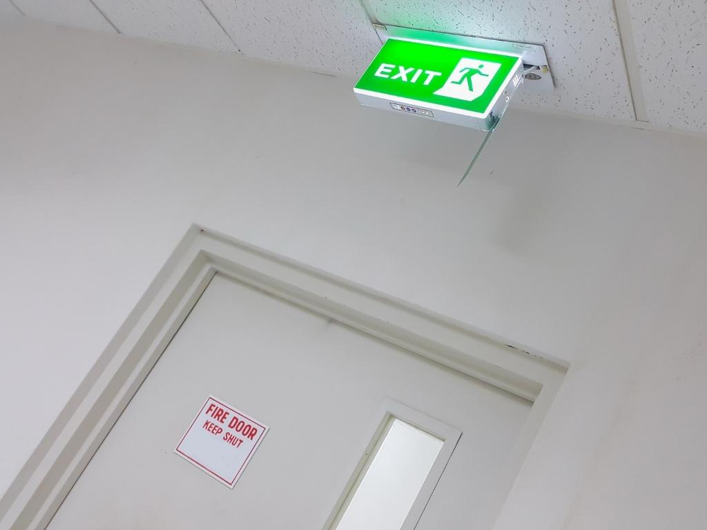

Lời khuyên nào trong việc lựa chọn cửa chống cháy?
Lựa chọn cửa chống cháy là một quyết định quan trọng để đảm bảo an toàn cho con người, tài sản và không gian sống trong trường hợp hoả hoạn xảy ra. Vậy làm sao để lựa chọn cửa chống cháy đạt chuẩn? KH Shield sẽ cho bạn câu trả lời qua bài viết dưới đây!
Khi lựa chọn cửa chống cháy, cần đảm bảo một số tiêu chí quan trọng về chất lượng và hiệu suất an toàn của sản phẩm để cửa chống cháy thực sự trở thành “vệ sĩ” giúp bảo vệ tính mạng và tài sản trong trường hợp cháy xảy ra.
- Tuân thủ các quy định và tiêu chuẩn an toàn: đảm bảo rằng cửa chống cháy tuân thủ các quy định và tiêu chuẩn an toàn liên quan, như ASTM, UL, EN, NFPA, v.v. Các tiêu chuẩn này đảm bảo rằng cửa chống cháy đáp ứng các yêu cầu kỹ thuật và an toàn cần thiết.
- Xác định thời gian chống cháy yêu cầu: ác định thời gian chống cháy yêu cầu cho công trình của bạn. Thời gian chống cháy thường được phân loại theo các mức độ, chẳng hạn như 30 phút, 60 phút, 90 phút hoặc 120 phút. Lựa chọn cửa chống cháy có thời gian chống cháy phù hợp với yêu cầu của công trình.
- Chất liệu cửa chống cháy: Cửa chống cháy có thể được làm từ các chất liệu như thép, gỗ chống cháy hoặc composite chống cháy. Mỗi chất liệu có ưu điểm và hạn chế riêng. Hãy xem xét yêu cầu về chống cháy, thẩm mỹ và khả năng chống xâm nhập để lựa chọn chất liệu phù hợp.
- Kiểm định và chứng nhận: đảm bảo rằng cửa chống cháy đã được kiểm định và chứng nhận bởi các cơ quan có thẩm quyền. Việc này đảm bảo rằng sản phẩm đáp ứng các tiêu chuẩn chất lượng và an toàn cần thiết.
- Khả năng chống khói: khói cháy có thể gây nguy hiểm cho sức khỏe con người. Chọn cửa chống cháy có khả năng chống khói tốt để ngăn chặn sự xâm nhập của khói độc.
- Hãng sản xuất và nhà cung cấp uy tín: lựa chọn cửa chống cháy từ các hãng sản xuất và nhà cung cấp uy tín. Nên tìm hiểu về độ tin cậy, kinh nghiệm và danh tiếng của họ trong lĩnh vực cửa chống cháy.

Phòng chống cháy nổ và bảo vệ an toàn tính mạng cùng tài sản là điều quan trọng, vị vậy việc lựa chọn lắp đặt cửa chống cháy là điều thực sự cần thiết.